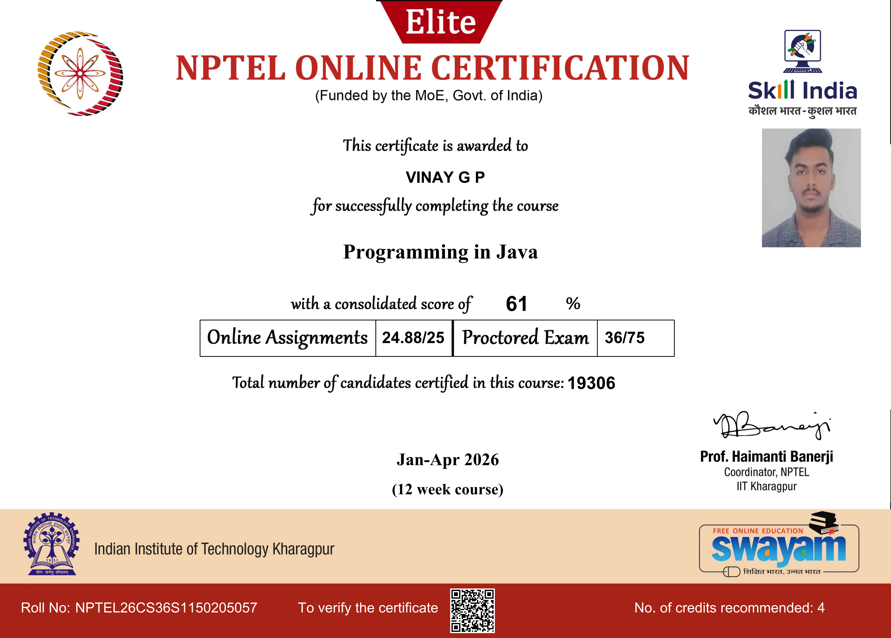
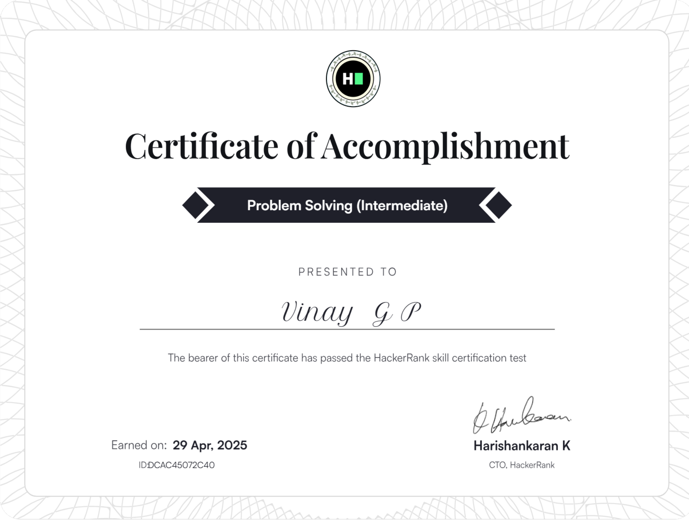
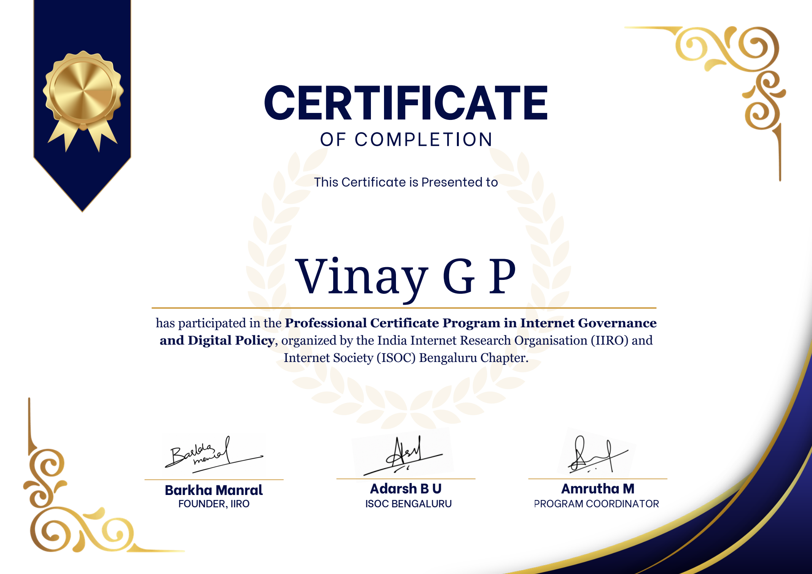

SOC & Network Security
Building foundations in monitoring, investigation, vulnerability assessment, and defensive security.
HELLO, WORLD. I'M
An Information Science and Engineering student interested in SOC analysis, network defense, threat detection, and vulnerability assessment. I’m building practical skills through technical projects, authorized labs, and continuous learning.
▌ Learn by testing. Improve by documenting.
# Areas I'm exploring
vinay@security:~$ whoami
Aspiring SOC Analyst
vinay@security:~$ cat interests.txt
Network reconnaissance
Packet analysis
Web application security
Security monitoring
vinay@security:~$ cat workflow.txt
Observe → Investigate → Document → Improve
vinay@security:~$ _
01 / ABOUT
I enjoy understanding how systems communicate, where security weaknesses may exist, and how defensive controls can reduce risk.
I am pursuing a Bachelor of Engineering in Information Science and Engineering at Jawaharlal Nehru New College of Engineering (JNNCE), Shivamogga, Karnataka. My primary interests are Security Operations Center (SOC) analysis and network security.
I have practical exposure to tools including Nmap, Wireshark, OWASP ZAP, Cisco Packet Tracer, and MikroTik RouterOS. I am developing my understanding of network communication, web application security, security monitoring, and threat detection through hands-on exercises and technical projects.
This site is a project hub rather than a CV: it is intended to document methods, observations, evidence, and lessons learned as the work develops.
Building foundations in monitoring, investigation, vulnerability assessment, and defensive security.
JNNCE, Shivamogga, Karnataka.
Practical experimentation supported by clear technical notes and responsible testing.
02 / PROJECT LAB
Projects and practical investigations, with evidence links added as they become available. Open any card for objectives, methods, learning, and real-world relevance.
Website security assessment activities to understand potential vulnerabilities, examine security configurations, and identify areas for improvement.
An ongoing hands-on network security project focused on capturing and analyzing network traffic using Wireshark. The project explores TCP/IP communication, DNS queries, packet inspection, and network troubleshooting in a controlled lab environment.
Project descriptions distinguish completed activities from planned work. Add actual findings, screenshots, reports, and links before claiming a result is verified.
03 / PRACTICAL LEARNING
Hands-on labs and learning activities are separate from formal certifications.
Document completed rooms, learning paths, exercises, and technical write-ups here.
Developing foundations in event analysis, authentication logs, alert triage, and threat detection.
Add completed lab steps, sample logs, detection rules, and investigation notes when available.
Exploring network discovery, packet inspection, addressing, network services, and configuration concepts.
Document authorized lab scenarios, configurations, and observations.
04 / TECHNICAL NOTES
Short technical reports can show how you investigate a topic, explain evidence, and recommend improvements.
Explain SYN, SYN-ACK, ACK and why connection setup matters.
Document authorized target scope, scan purpose, observations, and limitations.
Explore DNS request/response behavior and relevant packet filters.
Introduce common security headers and explain what they help mitigate.
Describe how authentication events may be triaged and investigated.
Document access restrictions, network boundaries, and defensive trade-offs.
05 / COMPETITIONS
Competitions and events, with the focus on contribution, outcome, and learning.
Recognized among 14 teams out of 70 participating teams. Add a brief explanation of the challenge, your contribution, what it involved, and evidence of the result.
Add verified CTFs, placements, challenge categories, write-ups, and lessons learned when you have specific entries.
06 / CERTIFICATIONS & TRAINING
Formal training complements hands-on practice; practical labs are listed separately above.
Programming foundations and structured problem-solving through a 12-week NPTEL online course.

🔍 Click to viewSuccessfully passed the HackerRank Problem Solving (Intermediate) skill certification test.

🔍 Click to viewFoundational understanding of artificial intelligence concepts and customer engagement skills.
Participated in the Professional Certificate Program in Internet Governance and Digital Policy, organized by the India Internet Research Organisation (IIRO) and Internet Society (ISOC) Bengaluru Chapter.

🔍 Click to viewEnsure certificate titles and credential links match the original documents before sharing this portfolio.
07 / ACHIEVEMENTS & COMMUNITY
Technical communities are opportunities to collaborate, organize learning, and contribute to student activities.
Supporting technical activities, workshops, bootcamps, hackathons, and student learning initiatives.
Contributed to organizing a national-level student hackathon. Add your specific responsibilities, outcomes, and event evidence.
08 / TECHNICAL TOOLKIT
A snapshot of tools and technical areas in the portfolio. Actual proficiency should be described accurately.
09 / CONTACT
I’m interested in cybersecurity internships, SOC Analyst opportunities, and network security roles where I can apply my technical knowledge, gain practical experience, and continue developing my skills.
Get in touch ↗